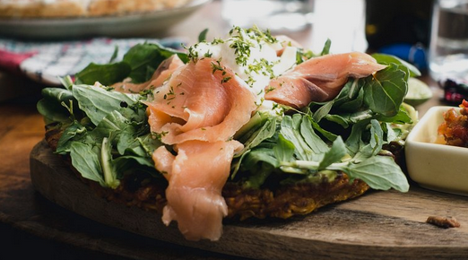

Smoked Salmon Flatbread Recipe
Home

Description
Made with toasted multigrain bread, topped with tzatziki, smoked salmon, capers and dill.
Ingredients
- 1 multigrain flatbread
- 10 ounces spinach parmesan tzatziki spread
- 3 ounces smoked salmon
- 2 tablespoons capers, drained or as needed
- fresh dill sprigs, for garnish
Steps
- Preheat oven to 190 degrees. Place flatbread on baking sheet.
- Toast in the preheated oven until golden brown, about 5 minutes.
- Spread flatbread with 1 to 2 tablespoons tzatziki sauce. Add the spinach. Distribute smoked salmon over spinach. Scatter capers and dill over salmon.